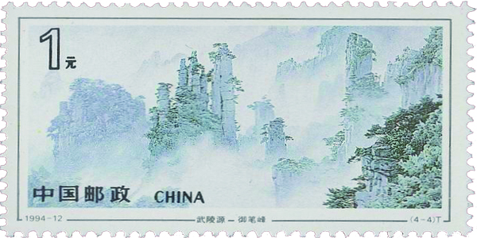

武陵源
志号为1994-12的特种邮票。 邮票全套四枚，图案分别描绘了武陵源风景区南天门、 神堂湾、天下第一桥和御笔峰的景观。
查看详情

.jpg)
Hi！欢迎来到个人中心
下面是关于一些邮票的简介希望对你有所帮助
供寄递邮件贴用的邮资凭证，一般由主权国家发行。 邮票的方寸空间，常体现一个国家或地区的历史、科技、 经济、文化、风土人情、自然风貌等特色，这让邮票除了 邮政价值之外还有收藏价值。邮票也是某些国家或地区重要的财源来源。 收藏邮票的爱好叫集邮。世界上最早的邮票是英国罗兰·希尔爵士发明的黑便士， 中国最早的邮票是清朝的大龙邮票。为纪念中国改革开放40周年， “中国—巨变”大型邮票展11日在比利时鲁汶大学开幕，精挑细选的188枚邮票让 观众重温改革开放给中国带来的历史性巨变。
邮票收藏可以增加知识，开阔眼界、陶冶情操。通过集邮者的收藏活动， 可以使邮票得到妥善保存，尤其是能够保护珍邮，发掘珍邮。
喜鹊在民间被视为报喜鸟，能给人们带来好运。传说每到农历七月初七， 千万只喜鹊因被牛郎织女忠贞的爱情所感动，飞到银河搭成鹊桥，让二人在鹊桥上相会 。因此，喜鹊亦被视为爱情的使者。邮票展示的“喜鹊登梅”是中国传统的吉祥喜庆图案， “梅”与“眉”同音，故又作“喜上眉梢”。
查看详情 ›熊猫是中国特产的稀有动物。为了宣传我国这一特有珍稀动物， 增进与各国的交往和友好， 交通部邮政总局先后于1963年8月5日和 1973年1月15日，各发行了一套熊猫邮票，两套邮票的图案均依据我 国著名画家吴作人先生所创作的原画进行设计，生动而逼真地表现出 这一珍稀动物的生活习性和特征。
查看详情 ›邮票于 1991 年 1 月 5 日 发行，一套 1 枚， 面值 20 分，印量 12481.65 万枚，影雕套印，设计者雷汉林， 雕刻者呼振源。同时发行小本票。
查看详情 ›马是人类的朋友。从远古时代，我们的先民就曾把马作为图腾来崇拜， 它是英俊、忠实、勤劳、勇敢的象征。邮票和小型张在三十年最佳邮票评 选中被评为最佳特种邮票之一。
查看详情 ›本套邮票设计者为中国当代极具影响力的艺术家、 “福娃”之父韩美林，其将“国”和“家”的概念作为整 套邮票的创作理念。邮票第一图画面表现一只奋进奔 跑的公鸡形象，象征国家的快速发展，寓意“国”之概 念；
查看详情 ›T124一轮生肖邮票龙大版，设计者祖天丽，雕刻者群峰。这条龙不以雄姿惊人，不以威猛慑人，而以寓于亲切之情、活泼之性为重。
查看详情 ›该枚邮票主要表现李时珍在野外采药的场景， 画面上李时珍肩上斜背着草帽，左手拿着刚刚采到的草药 ，右手执采药铲，半坐在山坡上，目光专注，正在观察草药的形貌。 表现其实事求是，不畏险阻，追求科学真理的精神。
查看详情 ›材于《三国演义》第一回“宴桃园豪杰三结义， 斩黄巾英雄首立功”，展示的是桃园三结义的情景。
查看详情 ›为了热烈庆祝我国自制汽车成功，在1957年国际劳动节之际， 国家邮电部发行了这套纪念邮票，大长了中国人民的志气。
查看详情 ›为了弘扬中国的传统鱼文化，我国邮电部门于1960年6月1日发行特38“金鱼”特种邮票， 全套12枚，介绍了翻鳃绒球，黑龙睛，水泡眼，红虎头，珍珠，蓝龙睛，望天，红帽子， 紫帽子，红头，花龙睛，红龙睛这12种中国金鱼的名贵品种。
查看详情 ›1962年12月1日我国邮电部发行一套纪92《中国古代科学家》（第一组）纪念邮票。 全套共8枚，介绍古代科学家，即：东汉的蔡伦（造纸）、唐代的孙思邈（医药）、 宋代的沈括（地质）、元代的郭守敬（天文）。
查看详情 ›《己亥年》是中国邮政为了迎接“己亥年”的到来， 于2019年1月5日发行的，志号为2019-1的特种邮票。 《己亥年》邮票全套2枚，第一枚描绘了一只奔跑的肥猪； 第二枚描绘了喜气洋洋的两只大猪和三只小猪。
查看详情 ›马邮票是指邮票内容或题材以马为主的邮票。 在中国，主要包括每到马年发行的生肖纪念邮票。 在外国，也有以马为题材的邮票。近年来， 部分外国邮政也开始发行生肖马的纪念邮票。
查看详情 ›这套《古代书院》特种邮票， 取材于北宋四大书院。设计者采用高清晰度扫描制版工艺 ，层次细腻清楚，体现出一种书院特有的宁静安祥、 古朴典雅的书卷气息。
查看详情 ›《牡丹》是中华人民共和国邮电部为了展示中国丰富的植物资源， 于1964年8月5日发行的，志号为特61的特种邮票。牡丹是中国特产的观赏花卉， 素为中国人民所喜爱。中国人把它作为富贵吉祥、繁荣幸福的象征。杜丹又名鹿韭、 鼠姑、百两金、木芍药、富贵花，属毛茛科牡丹属，多年生落叶小灌木
查看详情 ›找到你最喜欢的邮票
志号为1994-12的特种邮票。 邮票全套四枚，图案分别描绘了武陵源风景区南天门、 神堂湾、天下第一桥和御笔峰的景观。